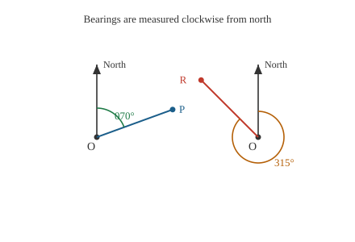
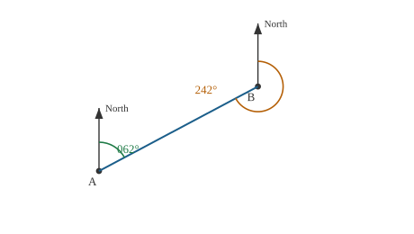

<script>if(location.hostname.endsWith('onrender.com'))location.replace('https://math-sandbox.pages.dev'+location.pathname+location.search+location.hash)</script>
<section class="theory" data-section="IGCSE-15.2">
<h2>15.2 Bearings</h2>
<p class="src">Based on Cambridge IGCSE Mathematics Core &amp; Extended Coursebook, Chapter 15, printed pp.476–478 (three-figure bearings, back bearings, and Exercise 15.3). Printed pages were read from the coursebook scans (printed 476–478 = part 047 pages 1–3). Own wording and new numbers. Teaching stops before 15.3 on printed p.479.</p>
<p class="key-words"><strong>Key words:</strong> <em>bearing</em>, <em>three-figure bearing</em>, <em>back bearing</em></p>
<p>A <strong>bearing</strong> is a way of describing a direction. Every bearing is measured <strong>clockwise from north</strong>. A <strong>three-figure bearing</strong> is written with three digits, so a bearing of \(40^\circ\) is written \(040^\circ\). Because the angle is always taken clockwise from north, a bearing can be a reflex angle (greater than \(180^\circ\) but less than \(360^\circ\)).</p>
<figure>

<figcaption>The bearing of \(P\) from \(O\) is \(070^\circ\). The bearing of \(R\) from \(O\) is \(315^\circ\).</figcaption>
</figure>
<p>The north lines drawn at two different points are parallel. Corresponding angles, or co-interior angles, on those parallel lines can therefore be used to find a <strong>back bearing</strong>: the bearing of \(A\) from \(B\) when you already know the bearing of \(B\) from \(A\).</p>
<figure>

<figcaption>The bearing of \(B\) from \(A\) is \(062^\circ\), so the bearing of \(A\) from \(B\) is \(062^\circ+180^\circ=242^\circ\).</figcaption>
</figure>
<div class="worked-example">
<h4>Worked example 1</h4>
<p class="src">Book: Worked example 2 style, printed p.477. New numbers.</p>
<p>The bearing of town \(B\) from town \(A\) is \(062^\circ\). What is the bearing of town \(A\) from town \(B\)?</p>
<ol class="steps">
<li>The two north lines are parallel, so the angle between north at \(B\) and the line \(BA\), on the corresponding side, is also \(62^\circ\). <span class="mark">M1</span></li>
<li>The bearing of \(A\) from \(B\) is measured clockwise from north, so it is \(62^\circ+180^\circ=242^\circ\). <span class="mark">A1</span></li>
</ol>
<p class="final"><strong>Answer:</strong> \(242^\circ\)</p>
</div>
<p>In general, to find a back bearing, add \(180^\circ\) to the original bearing, or subtract \(180^\circ\) if adding would give a value of \(360^\circ\) or more. The two bearings always differ by \(180^\circ\).</p>
<div class="worked-example">
<h4>Worked example 2</h4>
<p class="src">Book: the tip on printed p.477, applied to a reflex bearing. New numbers.</p>
<p>The bearing of a lighthouse from a ship is \(215^\circ\). What is the bearing of the ship from the lighthouse?</p>
<ol class="steps">
<li>Add \(180^\circ\) would give \(395^\circ\), which is greater than \(360^\circ\), so subtract \(180^\circ\) instead: \(215^\circ-180^\circ=35^\circ\). <span class="mark">M1</span></li>
<li>As a three-figure bearing this is \(035^\circ\). <span class="mark">A1</span></li>
</ol>
<p class="final"><strong>Answer:</strong> \(035^\circ\)</p>
</div>
<h3>Common mistakes</h3>
<ul>
<li>Measuring a bearing anticlockwise from north, or from east, instead of clockwise from north.</li>
<li>Writing a bearing less than \(100^\circ\) with only two digits, for example \(70^\circ\) instead of \(070^\circ\).</li>
<li>Adding \(180^\circ\) to a bearing already greater than \(180^\circ\) and leaving an answer of \(360^\circ\) or more, instead of subtracting \(180^\circ\).</li>
</ul>
<h3>Quick checks</h3>
<div class="quick-check" data-q="QC1">
<h4>Quick check 1</h4>
<p>What is the three-figure bearing that points due west?</p>
<details><summary>Worked solution</summary>
<ol class="steps">
<li>West is \(270^\circ\) clockwise from north, so the three-figure bearing is \(270^\circ\). <span class="mark">A1</span></li>
</ol>
<p class="final"><strong>Answer:</strong> \(270\)</p>
</details>
</div>
<div class="quick-check" data-q="QC2">
<h4>Quick check 2</h4>
<p>The bearing of \(B\) from \(A\) is \(070^\circ\). What is the bearing of \(A\) from \(B\)?</p>
<details><summary>Worked solution</summary>
<ol class="steps">
<li>\(070^\circ+180^\circ=250^\circ\). <span class="mark">A1</span></li>
</ol>
<p class="final"><strong>Answer:</strong> \(250\)</p>
</details>
</div>
<div class="quick-check" data-q="QC3">
<h4>Quick check 3</h4>
<p>The bearing of \(B\) from \(A\) is \(215^\circ\). What is the bearing of \(A\) from \(B\)?</p>
<details><summary>Worked solution</summary>
<ol class="steps">
<li>\(215^\circ-180^\circ=35^\circ\), which as a three-figure bearing is \(035^\circ\). The value of the bearing, in degrees, is 35. <span class="mark">A1</span></li>
</ol>
<p class="final"><strong>Answer:</strong> \(35\)</p>
</details>
</div>
<p class="marks-key"><strong>Marks:</strong> M = method, A = accurate answer (depends on M), B = independent mark. Leave exact values exact.</p>
</section>
